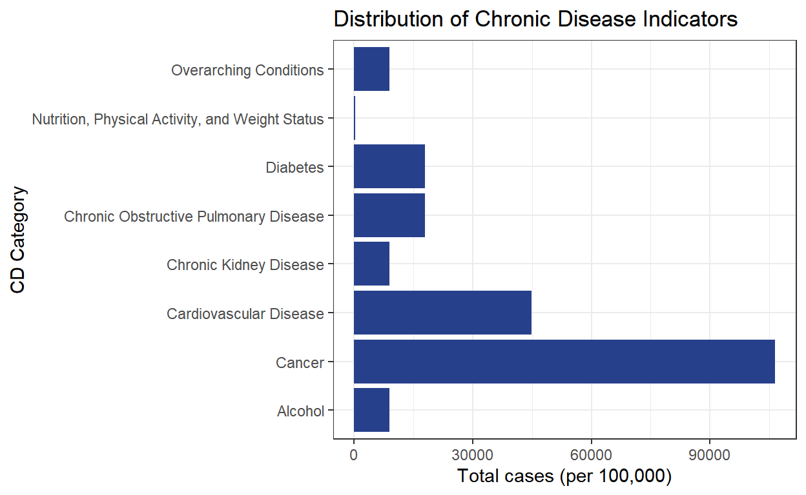

An analysis of U.S-wide chronic disease indicators by Hispanic stratification
Chronic disease (CD) has become an especially elevated concern as longer lifespans, environmental and social determinants, and lifestyle (diet, etc) have contributed to high rates of cardiovascular disease, diabetes, and other CDs in the United States. The CDC reports that in 2018, more than half of adults in the US had a diagnosed chronic condition. Another study by Ragupathi & Ragupathi quantifies that 70% of deaths in the U.S are a result of chronic disease, and 75% of combined healthcare spending is spent on chronic disease.
To combat rising chronic disease, Ragupathi & Ragupathi write that it is essential to correctly identify those at risk to create healthier outcomes. As chronic disease is heavily influenced by social determinants of health, including living, working, and dietary environments, it is critical to examine another social determinant to identify those at risk — ethnicity. Many published reports show racial and ethnic disparities in various aspects of health. However, studying chronic disease in Hispanic populations was of particular interest to me, because of the speculation that immigrant communities more frequently work in manual labor, may be at risk for poorer food quality in low-income households, and that language barriers may pose an obstacle to healthcare access and education (Torres).
Therefore, the hypothesis of my investigation is that Hispanic people will disproportionately suffer from chronic diseases, due to the potential risk factors discussed above.
The source of the the data is the “U.S. Chronic Disease Indicators” dataset provided by the CDC’s Division of Population Health. The data encompasses 124 chronic disease indicators, organized under 17 broader topic areas, such as Asthma, Reproductive Health, Cardiovascular Disease. The independent variable of interest is the race/ethnicity stratification within the data. The dependent variable of interest is the number of cases of the chronic disease indicator, measured per 100,000. Often, this case value represents mortality, but also includes hospitalizations, incidence, and alcohol use. The data is mainly collected from 3 sources: the National Vital Statistics System, which uses death certificates for mortality data among other vitals collections; the CDC’s Pregnancy Risk Assessment Monitoring System, which uses a survey questionnaire, and the CDC’s Youth Risk Behavior Surveillance System, which also uses survey data. The research design of my study is cross-sectional, as it measures rates of chronic illness across Hispanic and non-Hispanic groups at the same point in time.
A simple distribution of the data (subset to only include units of cases per 100,000) is included below to give an idea of the frequency of chronic disease overall on the national level.
overall_plot <- cdi|>
mutate(
unit = if_else(DataValueUnit == "cases per 100,000" | DataValueUnit == "per 100,000 residents" |
DataValueUnit == "per 100,000", "100k", "Other"))|>
filter(unit == "100k")|>
ggplot(mapping = aes(y = Topic)) + geom_bar(fill = 'royalblue4') +
labs(
x= "Total cases (per 100,000)", y = "CD Category", title = "Distribution of Chronic Disease Indicators"
) + theme_bw()
overall_plot
comp_Hisp <- cdi|>
mutate(
unit = if_else(DataValueUnit == "cases per 100,000" | DataValueUnit == "per 100,000 residents" |
DataValueUnit == "per 100,000", "100k", "Other"))|>
filter(unit == "100k")|>
filter(StratificationCategory1 == "Race/Ethnicity")|>
mutate(
race = case_when(
Stratification1 == "Hispanic" ~ 1,
Stratification1 != "Hispanic" ~ 0
))|>
mutate(
dis_mean = mean(DataValueAlt, na.rm = TRUE)
)|>
mutate(
race_chr = case_when(
Stratification1 == "Hispanic" ~ "Hispanic",
Stratification1 != "Hispanic" ~ "Non-Hispanic"
))
table1<- comp_Hisp|>
group_by(race, Topic)|>
drop_na(DataValueAlt, race)|>
summarize(
dis_mean = mean(DataValueAlt, na.rm = TRUE)
)|>
pivot_wider(
names_from = race,
values_from = dis_mean
)|>
mutate(
ATE = `1` - `0`
)|>
relocate(`0`, .after = `1`)
knitr::kable(table1, col.names = c("Chronic Disease", "Hispanic", "Non-Hispanic", "Difference in Means"))| Chronic Disease | Hispanic | Non-Hispanic | Difference in Means |
|---|---|---|---|
| Alcohol | 11.13681 | 16.22983 | -5.093019 |
| Cancer | 46.84110 | 44.25097 | 2.590128 |
| Cardiovascular Disease | 56.25068 | 121.57242 | -65.321744 |
| Chronic Kidney Disease | 36.41536 | 72.26624 | -35.850879 |
| Chronic Obstructive Pulmonary Disease | 64.87206 | 156.50006 | -91.627992 |
| Diabetes | 46.22179 | 68.02728 | -21.805484 |
| Overarching Conditions | 379.35170 | 663.68596 | -284.334256 |
library(scales)
comp_Hisp|>
group_by(race_chr, Topic)|>
drop_na(DataValueAlt, race_chr)|>
summarize(
dis_mean = mean(DataValueAlt, na.rm = TRUE)
)|>
ggplot(mapping = aes(x = Topic, y = dis_mean, fill = race_chr)) + geom_col(position = "dodge") +
scale_fill_manual(values = c("maroon","turquoise4"))+
labs(x = "Chronic Disease Topic", y= "Average Cases (per 100,000)", fill = "Hispanic (Y/N)")+theme_bw()+
scale_x_discrete(labels = label_wrap(10))library(modelsummary)
library(flextable)
models <- list(
"Alcohol" = lm(DataValueAlt ~ race + YearStart, data = Alc),
"Cancer" = lm(DataValueAlt ~ race + YearStart, data = Cancer),
"Cardiovascular Disease" = lm(DataValueAlt ~ race + YearStart, data = Cardio),
"Kidney Disease" = lm(DataValueAlt ~ race + YearStart, data = Kidney),
"Pulmonary Disease" = lm(DataValueAlt ~ race + YearStart, data = Pulm),
"Diabetes" = lm(DataValueAlt ~ race + YearStart, data = Diabetes)
)coef_map <- c("(Intercept)" = "(Intercept)",
"race" = "Hispanic",
"YearStart" = "Year",
"Num.Obs" = "Num.Obs",
"R2" = "R2",
"R2 Adj." = "R2 Adj.")
tab <- modelsummary(models, coef_map = coef_map, output = "flextable",
title = "Mean Chronic Disease Indicators in Hispanic vs Non-Hispanic Populations",
statistic = c("s.e. = {std.error}",
"p = {p.value}"),
gof_map = c("nobs", "r.squared", "adj.r.squared"))
tab|>
bg(4, bg = 'lemonchiffon')|>
autofit()
| Alcohol | Cancer | Cardiovascular Disease | Kidney Disease | Pulmonary Disease | Diabetes |
|---|---|---|---|---|---|---|
(Intercept) | -1298.539 | 673.621 | -652.234 | 1471.014 | -967.226 | -4270.583 |
s.e. = 215.618 | s.e. = 346.374 | s.e. = 344.773 | s.e. = 323.080 | s.e. = 714.742 | s.e. = 442.679 | |
p = <0.001 | p = 0.052 | p = 0.059 | p = <0.001 | p = 0.176 | p = <0.001 | |
Hispanic | -5.266 | 2.594 | -65.331 | -35.839 | -91.802 | -22.046 |
s.e. = 0.843 | s.e. = 0.975 | s.e. = 1.328 | s.e. = 1.250 | s.e. = 2.954 | s.e. = 1.780 | |
p = <0.001 | p = 0.008 | p = <0.001 | p = <0.001 | p = <0.001 | p = <0.001 | |
Year | 0.652 | -0.313 | 0.384 | -0.694 | 0.558 | 2.153 |
s.e. = 0.107 | s.e. = 0.172 | s.e. = 0.171 | s.e. = 0.160 | s.e. = 0.355 | s.e. = 0.220 | |
p = <0.001 | p = 0.069 | p = 0.025 | p = <0.001 | p = 0.116 | p = <0.001 | |
Num.Obs. | 2688 | 46112 | 20338 | 3938 | 6474 | 5650 |
R2 | 0.027 | 0.000 | 0.107 | 0.176 | 0.130 | 0.042 |
R2 Adj. | 0.026 | 0.000 | 0.106 | 0.176 | 0.130 | 0.041 |
Here is the regression table of each of the chronic disease categories, adjusted for the variable of year to ensure that time was not a confounding variable. A brief note on conditioning for the year variable is that the year data was collected did seem to have a stastistically significant effect in several of the CD indicators (alcohol, kidney disease, diabetes). The coefficients on this variable represent that if “Hispanic” was held constant, there would be slight change from each group due to the variability of year. And this could be related to external social phenomenon that is linked to higher rates of drinking + kidney disease, as well as a trend of higher rates of diabetes over time.
The main coefficients of interest are the coefficients in the “Hispanic” row. These coefficients represent the percentage point change in chronic disease indicator rates, comparing the Hispanic group to the non-Hispanic group. In this case, being the Hispanic group is the independent variable which produces the outcome. For example, under the alcohol category, there is a 5.3 percentage point decrease in alcohol indicator rates in the Hispanic group, compared to the non-Hispanic group. And, the cancer category shows there is a 2.6 percentage point increase in cancer indicator rates in the Hispanic group compared to the non-Hispanic group. I think among the results, what especially stands out is the very large percentage point decreases in the Hispanic group for cardiovascular, kidney, and pulmonary disease, as well as diabetes, compared to non-Hispanics. This represents that there is significantly lower rates of these chronic diseases in Hispanic populations than in non-Hispanic.
Despite these largely lower CD rates overall, the Hispanic group does a higher cancer rate. However, at an alpha level of 0.05, the cancer coefficient is not statistically significant, while the other coefficients for alcohol, kidney disease, and diabetes are extremely statistically significant (<0.001), and cardiovascular and pulmonary coefficients are statistically significant as well.
The barplot helps visualize this finding, as the cancer disparity (dif in means) is visually smaller compared to the other bars’. “Overarching Conditions” is omitted in the regressions after the barplot because of its ambiguity in definition.
The results of the analysis largely contradict the hypothesis I originally started with. The data shows that Non-Hispanic people have higher rates of chronic disease in all the analyzed categories, except for cancer. There are several potential reasons that might explain this conclusion:
First, there’s a chance that lifestyles of Hispanic people may put them at a lower risk for chronic disease. Higher rates of occupation in manual labor like construction may actually help mitigate chronic diseases that develop as a result of an inactive lifestyle, like cardiovascular disease.
This data may not be telling the whole story. Collecting data about Hispanic populations is hard in and of itself because methods of tracking race and ethnicity and health are not standardized across states. Most of the final data used was explicitly labeled as Hispanic, non-Hispanic white, or non-Hispanic black, which hopefully helped our results. However, a lot of the dataset was filtered out for the purposes of standardization to reach our final subset data frame, including excluding data that wasn’t explicitly in “cases per 100,000” units, and data that wasn’t racially stratified. The subsetting of the data could’ve introduced a bias. Therefore, there are many data points that are not in the final regression that could possibly provide a different outcome.
Demographic shares could also be skewing our outcome. Currently, only around 19.1% of the population of the United States is Hispanic. Because the data source doesn’t clarify if the data values represent cases among the whole population or specifically among its ethnic group, it could be possible that there are going to be overwhelmingly more cases among white people because there is a demographic majority of white people living in the U.S.
Because of these limitations, and because of the observational nature of the study, the results should not be used to determine causal conclusions.
If I were to conduct this study better, I would organize a comprehensive survey of questions about chronic disease related indicators, and randomly assign the survey, ideally across all 50 states. The survey would collect gender, racial, and ethnicity data to cover more potential intersections between social determinants. The survey might still suffer from the limitation of possible underdiagnosis of certain chronic diseases in certain demographic groups, but it would present much cleaner, randomized data to be able to draw causal conclusions from.
Thanks for reading :)
Boersma P, Black LI, Ward BW. Prevalence of Multiple Chronic Conditions Among US Adults, 2018. Prev Chronic Dis 2020;17:200130. DOI: http://dx.doi.org/10.5888/pcd17.200130
“Hispanic Heritage Month: 2023.” U.S. Census Bureau, 2023. https://www.census.gov/newsroom/facts-for-features/2023/hispanic-heritage-month.html
Raghupathi, Wullianallur, and Viju Raghupathi. “An Empirical Study of Chronic Diseases in the United States: A Visual Analytics Approach.” International journal of environmental research and public health vol. 15,3 431. 1 Mar. 2018, doi:10.3390/ijerph15030431
Torres, Luis. “Driving Health Equity for the Hispanic American Community.” The Cigna Group. https://newsroom.thecignagroup.com/driving-health-equity-hispanic-american-community#:~:text=Social%20Determinants%20of%20Health%20and,bias%20in%20the%20medical%20profession.
library(readr)
library(dplyr)
library(tidyverse)
cdi <- read_csv("C:/Users/18mia/Downloads/U.S._Chronic_Disease_Indicators__CDI_.csv")
overall_plot <- cdi|>
mutate(
unit = if_else(DataValueUnit == "cases per 100,000" | DataValueUnit == "per 100,000 residents" |
DataValueUnit == "per 100,000", "100k", "Other"))|>
filter(unit == "100k")|>
ggplot(mapping = aes(y = Topic)) + geom_bar(fill = 'royalblue4') +
labs(
x= "Total cases (per 100,000)", y = "CD Category", title = "Distribution of Chronic Disease Indicators"
) + theme_bw()
overall_plot
comp_Hisp <- cdi|>
mutate(
unit = if_else(DataValueUnit == "cases per 100,000" | DataValueUnit == "per 100,000 residents" |
DataValueUnit == "per 100,000", "100k", "Other"))|>
filter(unit == "100k")|>
filter(StratificationCategory1 == "Race/Ethnicity")|>
mutate(
race = case_when(
Stratification1 == "Hispanic" ~ 1,
Stratification1 != "Hispanic" ~ 0
))|>
mutate(
dis_mean = mean(DataValueAlt, na.rm = TRUE)
)|>
mutate(
race_chr = case_when(
Stratification1 == "Hispanic" ~ "Hispanic",
Stratification1 != "Hispanic" ~ "Non-Hispanic"
))
table1<- comp_Hisp|>
group_by(race, Topic)|>
drop_na(DataValueAlt, race)|>
summarize(
dis_mean = mean(DataValueAlt, na.rm = TRUE)
)|>
pivot_wider(
names_from = race,
values_from = dis_mean
)|>
mutate(
ATE = `1` - `0`
)|>
relocate(`0`, .after = `1`)
knitr::kable(table1, col.names = c("Chronic Disease", "Hispanic", "Non-Hispanic", "Difference in Means"))
library(scales)
comp_Hisp|>
group_by(race_chr, Topic)|>
drop_na(DataValueAlt, race_chr)|>
summarize(
dis_mean = mean(DataValueAlt, na.rm = TRUE)
)|>
ggplot(mapping = aes(x = Topic, y = dis_mean, fill = race_chr)) + geom_col(position = "dodge") +
scale_fill_manual(values = c("maroon","turquoise4"))+
labs(x = "Chronic Disease Topic", y= "Average Cases (per 100,000)", fill = "Hispanic (Y/N)")+theme_bw()+
scale_x_discrete(labels = label_wrap(10))
library(infer)
Alc <- comp_Hisp|>
filter(Topic == "Alcohol")
Alc_lm <- lm(DataValueAlt ~ race + YearStart, data = Alc)
modelsummary::modelsummary(Alc_lm,
statistic = c("s.e. = {std.error}",
"p = {p.value}"),
gof_map = c("nobs", "r.squared", "adj.r.squared"))
Cancer <- comp_Hisp|>
filter(Topic == "Cancer")
Canc_lm <- lm(DataValueAlt ~ race, data = Cancer)
modelsummary::modelsummary(Canc_lm,
statistic = c("s.e. = {std.error}",
"p = {p.value}"),
gof_map = c("nobs", "r.squared", "adj.r.squared"))
Cardio <- comp_Hisp|>
filter(Topic == "Cardiovascular Disease")
Card_lm <- lm(DataValueAlt ~ race, data = Cardio)
modelsummary::modelsummary(Card_lm,
statistic = c("s.e. = {std.error}",
"p = {p.value}"),
gof_map = c("nobs", "r.squared", "adj.r.squared"))
Kidney <- comp_Hisp|>
filter(Topic == "Chronic Kidney Disease")
Kidn_lm <- lm(DataValueAlt ~ race, data = Kidney)
modelsummary::modelsummary(Kidn_lm,
statistic = c("s.e. = {std.error}",
"p = {p.value}"),
gof_map = c("nobs", "r.squared", "adj.r.squared"))
Pulm <- comp_Hisp|>
filter(Topic == "Chronic Obstructive Pulmonary Disease")
Pulm_lm <- lm(DataValueAlt ~ race, data = Pulm)
modelsummary::modelsummary(Pulm_lm,
statistic = c("s.e. = {std.error}",
"p = {p.value}"),
gof_map = c("nobs", "r.squared", "adj.r.squared"))
Diabetes <- comp_Hisp|>
filter(Topic == "Diabetes")
Diab_lm <- lm(DataValueAlt ~ race, data = Diabetes)
modelsummary::modelsummary(Diab_lm,
statistic = c("s.e. = {std.error}",
"p = {p.value}"),
gof_map = c("nobs", "r.squared", "adj.r.squared"))
Overarching <- comp_Hisp|>
filter(Topic == "Overarching Conditions")
Over_lm <- lm(DataValueAlt ~ race, data = Overarching)
modelsummary::modelsummary(Over_lm,
statistic = c("s.e. = {std.error}",
"p = {p.value}"),
gof_map = c("nobs", "r.squared", "adj.r.squared"))
library(modelsummary)
library(flextable)
models <- list(
"Alcohol" = lm(DataValueAlt ~ race + YearStart, data = Alc),
"Cancer" = lm(DataValueAlt ~ race + YearStart, data = Cancer),
"Cardiovascular Disease" = lm(DataValueAlt ~ race + YearStart, data = Cardio),
"Kidney Disease" = lm(DataValueAlt ~ race + YearStart, data = Kidney),
"Pulmonary Disease" = lm(DataValueAlt ~ race + YearStart, data = Pulm),
"Diabetes" = lm(DataValueAlt ~ race + YearStart, data = Diabetes)
)
coef_map <- c("(Intercept)" = "(Intercept)",
"race" = "Hispanic",
"YearStart" = "Year",
"Num.Obs" = "Num.Obs",
"R2" = "R2",
"R2 Adj." = "R2 Adj.")
tab <- modelsummary(models, coef_map = coef_map, output = "flextable",
title = "Mean Chronic Disease Indicators in Hispanic vs Non-Hispanic Populations",
statistic = c("s.e. = {std.error}",
"p = {p.value}"),
gof_map = c("nobs", "r.squared", "adj.r.squared"))
tab|>
bg(4, bg = 'lemonchiffon')|>
autofit()